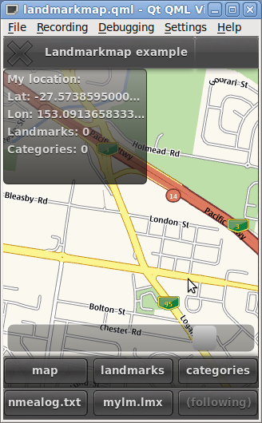

Files:

This example demonstrates the basic use of Landmark QML elements.
The example incorporates usage of the Map element, but the main focus is on illustrating basic use-cases of Landmarks and Categories (for a proper Map example, please see declarative-location/mapviewer ).
Draggable 'My location' item shows the current location, number of landmarks in the current map area, as well as number of categories . Number of landmarks is limited to 50 in the LandmarkModel.
Upper toolbar provides three different views: the map, flickable list of landmarks, and flickable list of categories.
Lower toolbar provides three different buttons:
'nmealog.txt' for using NMEA text file source. The example comes with one small example NMEA file (recorded in Australia). NMEA files are particularly useful when developing on a desktop machine without any real location source.
'mylm.lmx' can be used to import landmarks from local file.
'follow me' button causes the map's center to follow the user's current coordinate.
Double-clicking the mouse centers and zooms in on the point that was clicked. It also stops the map following user's coordinates.
The slider can be used to change the zoom level.